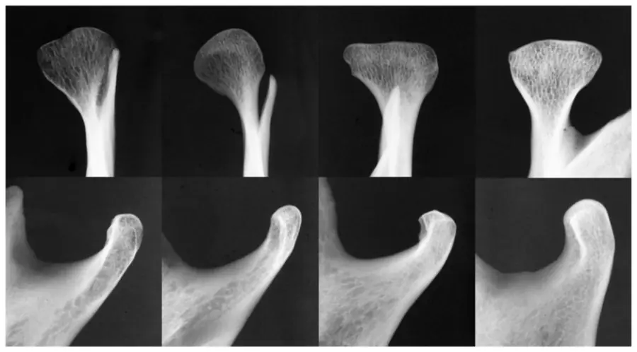
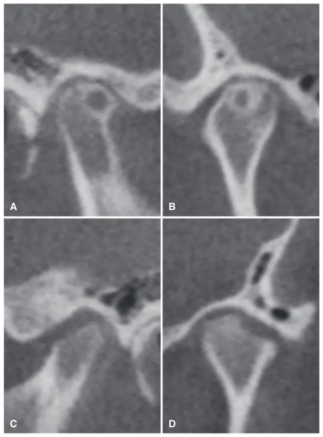

نسخه استخراجشده؛ ترجمه یا تأیید علمی انجام نشده است. وضعیت: captured
ریمادلینگ یک پاسخ است، نه یک بیماری: «پاسخ سازگارانهی غضروف و استخوان به نیروهای بارگذاری افزایشیافته یا تغییریافتهای که به مفصل وارد میشود.»

و منطق مکانیکیاش زیباست: این پاسخ شکل کندیل و برجستگی مفصلی را تغییر میدهد و میتواند سطوح مفصلی که بهطور طبیعی بهآرامی خمیدهاند را مسطح کند. «چنین تغییراتی بهطور مؤثری نیروهای بارگذاری را روی سطح بزرگتری بازتوزیع میکنند.» و همزمان «شمار ترابکولها هم افزایش مییابد و در نتیجه دانسیتهی استخوان اسفنجی زیرغضروفی بالا میرود — اسکلروز زیرغضروفی — تا در برابر نیروهای بارگذاری بهتر مقاومت کند.»
و مرز تعریفی با بیماری، یک جمله است: «هیچ تخریب یا دژنراسیونی در بافت مفصلی فیبروکارتیلاژ پوشانندهی اجزای استخوانی رخ نمیدهد.» و «ریمادلینگ TMJ در سراسر زندگی بزرگسالی رخ میدهد و تنها زمانی غیرطبیعی به شمار میرود که با علائم بالینی درد یا دیسفانکشن همراه باشد، یا اگر درجهی ریمادلینگ روی تصویر شدید ارزیابی شود».
و یک تصور نادرست رایج را کنار بگذار: «ریمادلینگ میتواند یکطرفه باشد و لزوماً پیشدرآمد DJD نیست.»
و کجا شروع میشود؟ «این تغییرات نخست روی سطح قدامی-فوقانی کندیل و شیب خلفی برجستگی مفصلی رخ میدهند.» و در مراحل اولیه ممکن است جنبهی خارجی مفصل هم درگیر شود، و با پیشرفت، جنبههای مرکزی و داخلی.
و سهگانهی ریمادلینگ: مسطح شدن، ضخیم شدن کورتکس سطوح مفصلی، و اسکلروز زیرغضروفی.
و دشوارترین افتراق این درس: «تفکیک تغییرات ریمادلینگ از DJD زودرس میتواند دشوار باشد، چون تغییرات میکروسکوپی همراه با دژنراسیون استخوان پیش از تغییرات ماکروسکوپیِ قابل رؤیت روی تصویر رخ میدهند.»
و کلید تفکیک: «ظاهر شدن فرسایش استخوان، استئوفیت، و از دست رفتن فضای مفصلی نشانههای قطعیتر DJDاند — هرچند ممکن است در مراحل اولیه حاضر نباشند.» و یک ملاک کمّی: «از دست رفتن قابل توجه حجم استخوان کندیل یا برجستگی، به فرسایش پیشین اشاره دارد نه به ریمادلینگ سازگارانه.»
و مدیریت: وقتی هیچ علامتی نیست، مدیریت اندیکاسیون ندارد. در غیر این صورت، درمان با هدف کاهش بارگذاری مفصل مانند اسپلینتتراپی — ولی «این باید پس از تلاش برای یافتن علت بارگذاری بیش از حد مفصل، مانند عادات پارافانکشنال، انجام شود».
DJD وقتی رخ میدهد که سازگاری شکست بخورد: «تصور میشود DJD زمانی رخ میدهد که توانایی مفصل برای سازگاری با نیروهای بارگذاری بیش از حد از راه ریمادلینگ، از حد گذشته باشد.» و خودش «فروپاشی پوشش فیبروکارتیلاژی روی سطوح مفصلی است که به وخامت نهایی ساختارهای استخوانی میانجامد».

و یک نکتهی تعریفی که بارها در آزمونها میآید: «باید توجه داشت که DJD یک وضعیت غیرالتهابی است که با وخامت مفصل و تکثیر استخوانی مشخص میشود.»
و دو مؤلفهاش را جدا نگه دار:
و یک قاعدهی زمانی: «معمولاً ترکیبی از هر دو رخ میدهد، ولی گاهی یک پاسخ غالب میشود. بهطور کلی، وخامت در بیماری حاد شایعتر است و تکثیر در بیماری مزمن غالب است.»
و فرسایشها را با یک تشبیه به یاد بسپار: «به شکل «گازها» یا «قاشقها»ی کوچک تا بزرگ درون سطوح مفصلی، که به از دست رفتن پیوستگی کورتکسها و سرانجام از دست رفتن حجم استخوان میانجامند.»
و در DJD شدید: حفرهی گلنوئید میتواند «بهدلیل فرسایش شیب خلفی برجستگی مفصلی بهشدت بزرگ به نظر برسد». و اگر فرسایش کافی باشد، «کندیل میتواند به موقعیت غیرطبیعی قدامی و فوقانی برود که به اوپن بایت قدامی میانجامد».
و کیستهای الای — که اصلاً کیست نیستند: «نواحی رادیولوسنت کوچک و گرد با حاشیههای نامنظم، احاطهشده با ناحیهای از اسکلروز، عمیقتر از سطوح مفصلی. این ضایعات که کیست زیرغضروفی یا کیست الای نامیده میشوند، کیست حقیقی نیستند بلکه نواحی دژنراسیوناند که حاوی بافت همبند فیبروز، بافت گرانولاسیون و استئوئیدند.»
و یک اشتباه رایج: «با از دست رفتن یا فروریختن استخوان روی کیست زیرغضروفی، ممکن است به نظر برسد که به سطح استخوان مهاجرت کرده، و در این حالت تفکیکش از یک فرسایش سطحی دشوار میشود.»
و استئوفیتها، محل مورد علاقهای دارند: «هرچند میتوانند روی هر بخشی از مفصل تشکیل شوند، معمولاً از سطح قدامی-فوقانی کندیل، جنبهی خارجی استخوان گیجگاهی، یا هر دو برمیخیزند.» و کارکردشان همان منطق مکانیکی است: «سطوح مفصلی پهنتر و مسطحتر میسازند و بار بیومکانیکی را روی ناحیهی بزرگتری بهتر توزیع میکنند».
و موشهای مفصلی: «استئوفیتها میتوانند بشکنند و آزادانه درون فضای مفصلی بیفتند. این قطعات بهعنوان «موشهای مفصلی» شناخته میشوند، و باید از دیگر شرایطی که رادیواوپسیتهی فضای مفصلی میسازند تفکیک شوند.»
و باریک شدن یا نبود کامل فضای مفصلی در حداکثر اینترکاسپیشن «اغلب با دیسک جابهجاشده و بارها با پرفوراسیون دیسک یا اتصال خلفی همبستگی دارد، که به تماس استخوان-به-استخوان اجزای مفصل میانجامد».
و طیف افتراقی DJD را با دو سر آن به یاد بسپار: «ظاهر فرسایشیتر میتواند آرتریتهای التهابی مانند RA را شبیهسازی کند، در حالی که ظاهر تکثیریتر با استئوفیتسازی گسترده میتواند نئوپلاسم خوشخیمی مانند استئوما یا استئوکندروما را شبیهسازی کند.»
و درمان، با یک واقعیت تلخ آغاز میشود: «تغییراتی که DJD در مفصل پدید میآورد با هیچ درمان شناختهشدهای برگشتپذیر نیستند.» درمان به سمت کاهش بار، تسکین التهاب ثانویه با داروهای ضدالتهاب، و افزایش تحرک و عملکرد میرود. اسپلینت اکلوزال، تزریق داخلمفصلی، و در موارد شدید مقاوم جراحی تعویض مفصل.